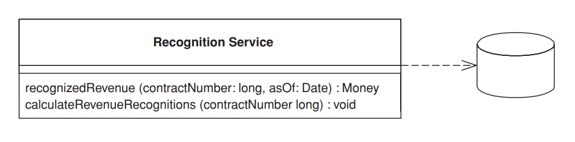
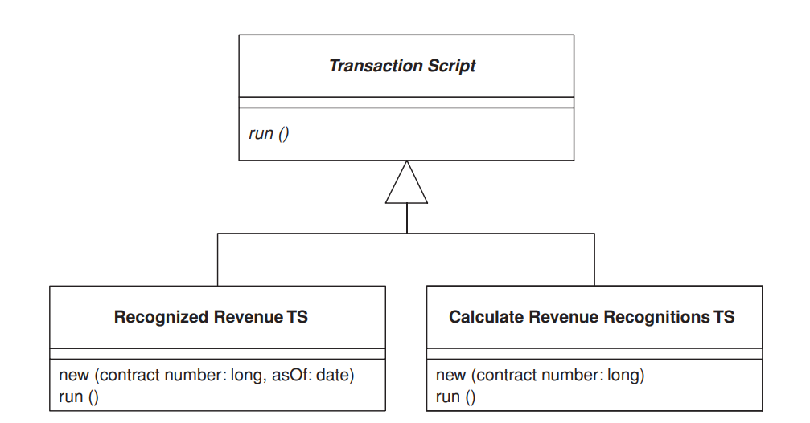
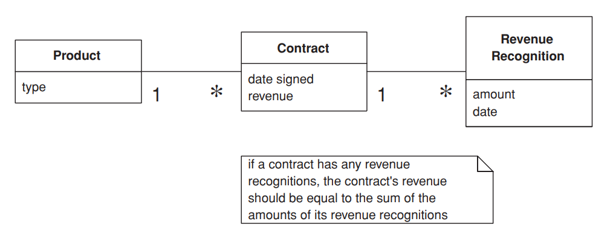

<!DOCTYPE html>
<html>
    <head>
        <title>Chapter 9: Domain Logic Patterns</title>
    </head>
    <body>
        <section id="chapter9">
        <h2>Chapter 9</h2>
        <h2>Domain Logic Patterns</h2>
        </section>
        <section id="transaction-script">
            <hr>
            <h4>Transaction Script</h4>
            <center><i>Organizes business logic by procedures where each procedure handles a single request from the presentation.</i></center>
            <figure>
                
            </figure>
            <p>Most business applications can be thought of as a series of transactions. A transaction may view some information as organized in a particular way, another will make changes to it. Each interaction between a client system and a server system contains a certain amount of logic. In some cases this can be as simple as displaying information in the database. In others it may involve many steps of validations and calculations.</p>
            <p>A Transaction Script organizes all this logic primarily as a single procedure, making calls directly to the database or through a thin database wrapper. Each transaction will have its own Transaction Script, although common subtasks can be broken into subprocedures.</p>
        </section>
        <section id="how-it-works">
            <h4>How It Works</h4>
            <p>With Transaction Script the domain logic is primarily organized by the transactions that you carry out with the system. If your need is to book a hotel room, the logic to check room availability, calculate rates, and update the database is found inside the Book Hotel Room procedure.</p>
            <p>For simple cases there isn’t much to say about how you organize this. Of course, as with any other program you should structure the code into modules in a way that makes sense. Unless the transaction is particularly complicated, that won’t be much of a challenge. One of the benefits of this approach is that you don’t need to worry about what other transactions are doing. Your task is to get the input, interrogate the database, munge, and save your results to the database.</p>
            <p>Where you put the Transaction Script will depend on how you organize your layers. It may be in a server page, a CGI script, or a distributed session object. My preference is to separate Transaction Scripts as much as you can. At the very least put them in distinct subroutines; better still, put them in classes separate from those that handle presentation and data source. In addition, don’t have any calls from the Transaction Scripts to any presentation logic; that will make it easier to modify the code and test the Transaction Scripts.</p>
            <p>You can organize your Transaction Scripts into classes in two ways. The most common is to have several Transaction Scripts in a single class, where each class defines a subject area of related Transaction Scripts. This is straightforward and the best bet for most cases. The other way is to have each Transaction Script in its own class (Figure 9.1), using the Command pattern [Gang of Four]. In this case you define a supertype for your commands that specifies some execute method in which Transaction Script logic fits. The advantage of this is that it allows you to manipulate instances of scripts as objects at runtime, although I’ve rarely seen a need to do this with the kinds of systems that use Transaction Scripts to organize domain logic. Of course, you can ignore classes completely in many languages and just use global functions. However, you’ll often find that instantiating a new object helps with threading issues as it makes it easier to isolate data.</p>
            <p>I use the term Transaction Script because most of the time you’ll have one Transaction Script for each database transaction. This isn’t a 100 percent rule, but it’s true to the first approximation.</p>
        </section>
        <section id="when-to-use-it">
            <h4>When to Use It</h4>
            <p>The glory of Transaction Script is its simplicity. Organizing logic this way is  natural for applications with only a small amount of logic, and it involves very  little overhead either in performance or in understanding.</p>
            <p>As the business logic gets more complicated, however, it gets progressively  harder to keep it in a well-designed state. One particular problem to watch for  is its duplication between transactions. Since the whole point is to handle one  transaction, any common code tends to be duplicated.</p>
            <figure>
                
                <figcaption><b>Figure 9.1</b> <i>Using commands for Transaction Script.</i></figcaption>
            </figure>
            <p>Careful factoring can alleviate many of these problems, but more complex  business domains need to build a Domain Model (116). A Domain Model (116)  will give you many more options in structuring the code, increasing readability  and decreasing duplication.</p>
            <p>It’s hard to quantify the cutover level, especially when you’re more familiar  with one pattern than the other. You can refactor a Transaction Script design to  a Domain Model (116) design, but it’s a harder change than it otherwise needs  to be. Therefore, an early shot is often the best way to move forward.</p>
            <p>However much of an object bigot you become, don’t rule out Transaction  Script. There are a lot of simple problems out there, and a simple solution will  get you up and running much faster.</p>       
        </section>
        <section id="the-revenue-recognition-problem">
            <h4>The Revenue Recognition Problem</h4>
            <p>For this pattern, and others that talk about domain logic, I’m going to use the same problem as an illustration. To avoid typing the problem statement several times, I’m just putting it in here.</p>
            <p>Revenue recognition is a common problem in business systems. It’s all about when you can actually count the money you receive on your books. If I sell you a cup of coffee, it’s a simple matter: I give you the coffee, I take your money, and I count the money to the books that nanosecond. For many things it gets complicated, however. Say you pay me a retainer to be available that year. Even if you pay me some ridiculous fee today, I may not be able to put it on my books right away because the service is to be performed over the course of a year. One approach might be to count only one-twelfth of that fee for each month in the year, since you might pull out of the contract after a month when you realize that writing has atrophied my programming skills.</p>
            <p>The rules for revenue recognition are many, various, and volatile. Some are set by regulation, some by professional standards, and some by company policy. Revenue tracking ends up being quite a complex problem.</p>
            <p>I don’t fancy delving into the complexity right now, so instead we’ll imagine a company that sells three kinds of products: word processors, databases, and spreadsheets. According to the rules, when you sign a contract for a word processor you can book all the revenue right away. If it’s a spreadsheet, you can book one-third today, one-third in sixty days, and one-third in ninety days. If it’s a database, you can book one-third today, one-third in thirty days, and one third in sixty days. There’s no basis for these rules other than my own fevered imagination. I’m told that the real rules are equally rational.</p>
            <figure>
                
                <figcaption><b>Figure 9.2</b> <i>A conceptual model for simplified revenue recognition. Each contract has multiple revenue recognitions that indicate when the various parts of the revenue should be recognized.</i></figcaption>
            </figure>
        </section>
        <section id="example-revenue-recognition">
            <h4>Example: Revenue Recognition (Java)</h4>
            <p>This example uses two transaction scripts: one to calculate the revenue recognitions for a contract and one to tell how much revenue on a contract has been recognized by a certain date. The database structure has three tables: one for the products, one for the contracts, and one for the revenue recognitions.</p>
            <pre>
                <code>CREATE TABLE products (ID int primary key, name varchar, type varchar)
                CREATE TABLE contracts (ID int primary key, product int, revenue decimal, dateSigned date)
                CREATE TABLE revenueRecognitions (contract int, amount decimal, recognizedOn date, PRIMARY KEY (contract, recognizedOn))
                </code>
            </pre>
            <p>The first script calculates the amount of recognition due by a particular day. I can do this in two stages: In the first I select the appropriate rows in the revenue recognitions table; in the second I sum up the amounts.</p>
            <p>Many Transaction Script designs have scripts that operate directly on the database, putting SQL code in the procedure. Here I’m using a simple Table Data Gateway (144) to wrap the SQL queries. Since this example is so simple, I’m using a single gateway rather than one for each table. I can define an appropriate find method on the gateway.</p>
            <pre>
                <code>
                class Gateway...
                public ResultSet findRecognitionsFor(long contractID, MfDate asof) throws SQLException{
                PreparedStatement stmt = db.prepareStatement(findRecognitionsStatement);
                stmt.setLong(1, contractID);
                stmt.setDate(2, asof.toSqlDate());
                ResultSet result = stmt.executeQuery();
                return result;
                }
                private static final String findRecognitionsStatement = "SELECT amount " + " FROM revenueRecognitions " + " WHERE contract = ? AND recognizedOn <= ?";
                private Connection db;
                </code>
            </pre>              
            <p>I then use the script to sum up based on the result set passed back from the gateway.</p>                
            <pre>
                <code>
                class RecognitionService...
                public Money recognizedRevenue(long contractNumber, MfDate asOf) {
                Money result = Money.dollars(0);
                try {
                ResultSet rs = db.findRecognitionsFor(contractNumber, asOf);
                while (rs.next()) {
                result = result.add(Money.dollars(rs.getBigDecimal("amount")));
                }
                return result;
                } catch (SQLException e) {throw new ApplicationException (e);
                }
                }
                </code>
            </pre>               
            <p>When the calculation is as simple as this, you can replace the in-memory script with a call to a SQL statement that uses an aggregate function to sum the amounts.</p>
            <p>For calculating the revenue recognitions on an existing contract, I use a similar split. The script on the service carries out the business logic.</p>
            <pre>
                <code>
                class RecognitionService...
                public void calculateRevenueRecognitions(long contractNumber) {
                try {
                ResultSet contracts = db.findContract(contractNumber);
                contracts.next();
                Money totalRevenue = Money.dollars(contracts.getBigDecimal("revenue"));
                MfDate recognitionDate = new MfDate(contracts.getDate("dateSigned"));
                String type = contracts.getString("type");
                if (type.equals("S")){
                Money[] allocation = totalRevenue.allocate(3);
                db.insertRecognition
                (contractNumber, allocation[0], recognitionDate);
                db.insertRecognition
                (contractNumber, allocation[1], recognitionDate.addDays(60));
                db.insertRecognition
                (contractNumber, allocation[2], recognitionDate.addDays(90));
                } else if (type.equals("W")){
                db.insertRecognition(contractNumber, totalRevenue, recognitionDate);
                } else if (type.equals("D")) {
                Money[] allocation = totalRevenue.allocate(3);
                db.insertRecognition
                (contractNumber, allocation[0], recognitionDate);
                db.insertRecognition
                (contractNumber, allocation[1], recognitionDate.addDays(30));
                db.insertRecognition
                (contractNumber, allocation[2], recognitionDate.addDays(60));
                }
                } catch (SQLException e) {throw new ApplicationException (e);
                }
                }
                </code>
            </pre>
            <p>Notice that I’m using Money (488) to carry out the allocation. When splitting an amount three ways it’s very easy to lose a penny.</p>
            <p>The Table Data Gateway (144) provides support on the SQL. First there’s a finder for a contract.</p>
            <pre>
                <code>
                class Gateway...
                public ResultSet findContract (long contractID) throws SQLException{
                PreparedStatement stmt = db.prepareStatement(findContractStatement);
                stmt.setLong(1, contractID);
                ResultSet result = stmt.executeQuery();
                return result;
                }
                private static final String findContractStatement = "SELECT * " + " FROM contracts c, products p " + " WHERE ID = ? AND c.product = p.ID";
                </code>
            </pre>
            <p>And secondly there’s a wrapper for the insert.</p>
            <pre>
                <code>class Gateway...
                public void insertRecognition (long contractID, Money amount, MfDate asof) throws SQLException {
                PreparedStatement stmt = db.prepareStatement(insertRecognitionStatement);
                stmt.setLong(1, contractID);
                stmt.setBigDecimal(2, amount.amount());
                stmt.setDate(3, asof.toSqlDate());
                stmt.executeUpdate();
                }
                private static final String insertRecognitionStatement =
                "INSERT INTO revenueRecognitions VALUES (?, ?, ?)";
                </code>
            </pre>
            <p>In a Java system the recognition service might be a regular class or a session bean.</p>
            <p>As you compare this to the example in Domain Model (116), unless your mind is as twisted as mine, you’ll probably be thinking that this is much simpler. The harder thing to imagine is what happens as the rules get more complicated. Typical revenue recognition rules get very involved, varying not just by product but also by date (if the contract was signed before April 15 this rule applies . . .). It’s difficult to keep a coherent design with Transaction Script once things get that complicated, which is why object bigots like me prefer using a Domain Model (116) in these circumstances.</p>
        </section>
    </body>
</html>